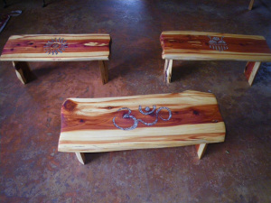
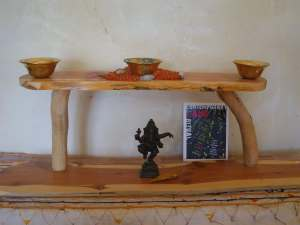

Solidarity Handworks Farmstand
Solidarity Handworks is both food from the land, and beautiful art crafted from the local forest. The Farmstand is located at our site. We are famous for our delicious salads and greens, grown in fertile soil in our solar greenhouses and available March through November. The farmstand is self-serve, and our cooler is powered by a solar electric system. Heirloom and gorgeous vegetables fill the shelves at the height of the season. We sell most of our garlic at the North Quabbin Garlic and Arts Festival but any left will go in our farmstand in October for your planting and eating pleasure.
The Art
As both farmer and artist, Ricky creates beautiful, sacred rustic pieces for custom order. Pieces are made from local red cedar, harvested with love, then crafted by hand into meditation benches, altars, tables, and coat racks, with beautiful inlays of blue corn and red pepper-looks like precious stone! All done with love, in a solar powered studio on our farm. If you wish to place an order, call 978-544-7564, ask for Ricky, or feel free to leave a message. Your purchases support our livelihood as a family working with the land.
Seeds of Solidarity


165 Chestnut Hill Rd
Orange, Massachusetts
01364-1078
Phone: (978) 544-9023